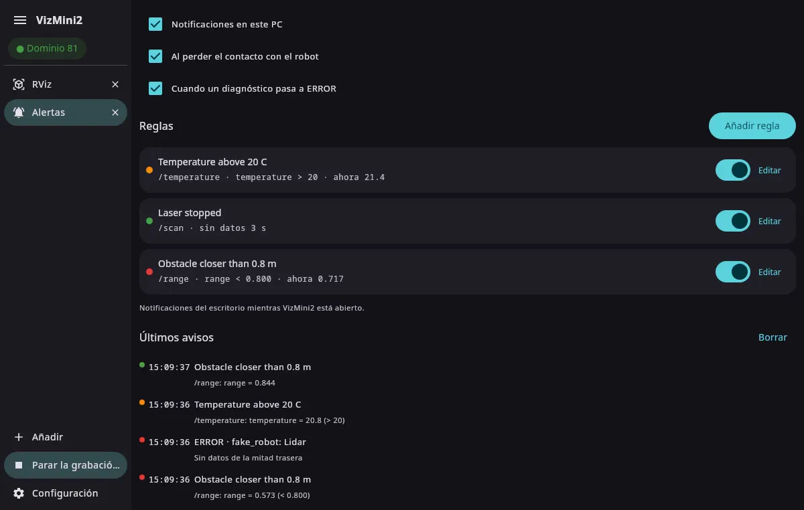

Recibir avisos cuando algo va mal
Objetivo: una notificación cuando la batería baja, el láser deja de publicar, una temperatura sube demasiado o el robot desaparece de la red, también con la app en segundo plano (móvil) o detrás de otras ventanas (PC).

Añade una pestaña Alertas con +. Arriba están los interruptores generales: en el móvil, Notificaciones de alertas en este móvil (para que funcionen con la app cerrada hace falta además la conexión en segundo plano, Conexión en segundo plano); en el PC, las notificaciones, la pérdida de contacto y los diagnósticos en ERROR, todos activados de serie.
Pulsa Añadir regla. Para la batería baja: Topic
/battery_state, Valor, Campopercentage, la comparación<y Umbral0.2; Aviso o Error. El campo puede ser cualquier número del mensaje, también dentro de arrays (status[0].level).Añade otra para un sensor que se para: Topic
/scan, Sin mensajes, Segundos sin mensajes3.Cada regla enseña su valor en directo (ahora 0.81) y un punto: verde si va bien, naranja o rojo cuando salta, gris si nadie la está vigilando. Apaga una regla con su interruptor; Editar la cambia o la borra.
Cuando una regla salta te llega una notificación (y otra cuando se recupera); Últimos avisos guarda el historial, también con la pérdida de contacto y los diagnósticos.
Las reglas las vigila el servicio de conexión del móvil o, en el PC, VizMini2 mientras está abierta. Más en Alertas y Alertas del robot.